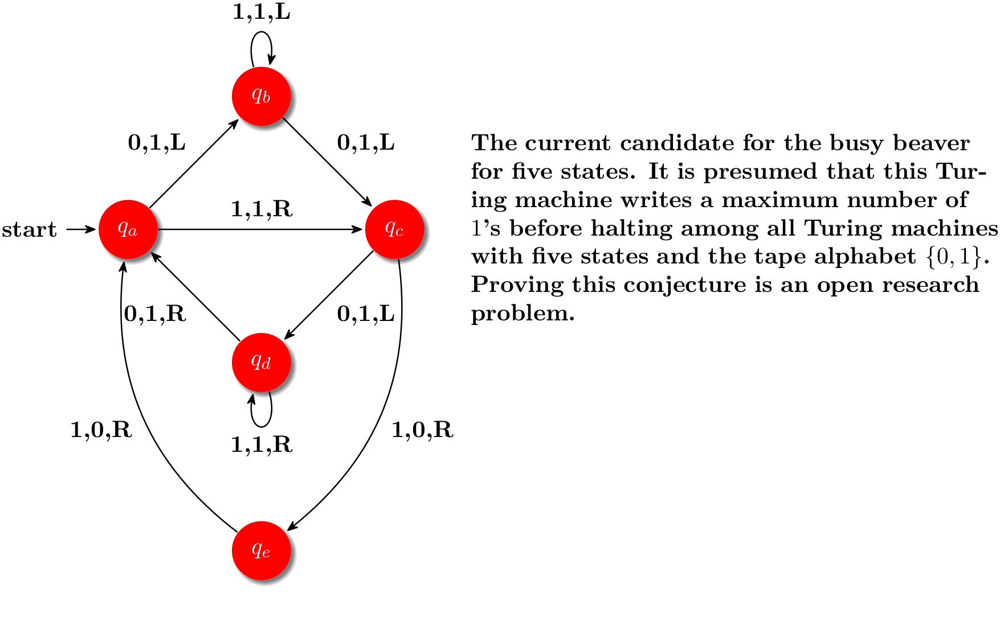

The TikZ and PGF Packages
Manual for version 3.1.9a
Part II Installation and Configuration
by Till Tantau
This part explains how the system is installed. Typically, someone has already done so for your system, so this part can be skipped; but if this is not the case and you are the poor fellow who has to do the installation, read the present part.

\usetikzlibrary {arrows.meta,automata,positioning,shadows}
\begin{tikzpicture}[->,>={Stealth[round]},shorten >=1pt,auto,node distance=2.8cm,on grid,semithick,
every state/.style={fill=red,draw=none,circular drop shadow,text=white}]
\node[initial,state] (A) {$q_a$};
\node[state] (B) [above right=of A] {$q_b$};
\node[state] (D) [below right=of A] {$q_d$};
\node[state] (C) [below right=of B] {$q_c$};
\node[state] (E) [below=of D] {$q_e$};
\path (A) edge
node
{0,1,L} (B)
edge
node
{1,1,R} (C)
(B) edge
[loop above] node
{1,1,L} (B)
edge
node
{0,1,L} (C)
(C) edge
node
{0,1,L} (D)
edge
[bend left] node
{1,0,R} (E)
(D) edge
[loop below] node
{1,1,R} (D)
edge
node
{0,1,R} (A)
(E) edge
[bend left] node
{1,0,R} (A);
\node [right=1cm,text width=8cm] at
(C)
{
The
current
candidate
for
the
busy
beaver
for
five
states. It
is
presumed
that
this
Turing
machine
writes
a
maximum
number
of
$1$'s
before
halting
among
all
Turing
machines
with
five
states
and
the
tape
alphabet
$\{0, 1\}$. Proving
this
conjecture
is
an
open
research
problem.
};
\end{tikzpicture}